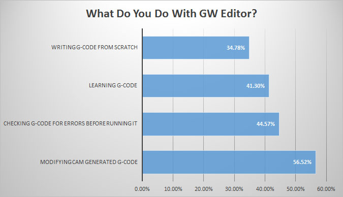
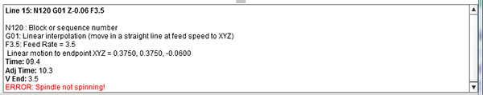

|
| |||||||||||
G-Wizard Editor: G-Code Made Easy
Here's what people use G-Wizard Editor to do:

It's not just for writing g-code from scratch
In fact, most customers use it to verify and improve their CAM-generated NC programs
Get a quick visual check of your toolpaths. Rapids are in red so you can quickly determine whether they're likely to run into anything. You can individually turn each tool on or off and change their colors to make it easy to see what each one is doing.
A calibrated grid in the background makes it easy to gauge size and position. Tabs make quick work of navigation across Perspective, Top, Front, and Right side views. You can zoom, rotate, and pan to your heart's content to see your work from every angle. Click on the GCode to move the simulated toolholder to the position on the backplot that line of code is for. Or click a feature on the backplot to see which GCode created it.
Many simulators just give you the visual backplot and leave you on your own for the rest. GW Editor does comprehensive error checking and flags lines with problems. It not only finds syntax errors in the GCode, but more subtle things as well such as trying to feed a cutter into the workpiece without first starting the spindle or programming an arc in such a way that the distance from center to each endpoint is different.
These are things that will either alarm out on the machine or can even lead to crashes. Finding them before the NC code gets on the machine while you're still working with your CAM software handy makes it much more efficient to fix the problems.

Heading out on a cutting move without turning on the spindle is generally a bad idea...
The Hints feature tells you in simple English exactly what the line of GCode will do, making it dramatically easier to learn GCode programming or just to job your memory when using some GCode feature that you haven't touched in a while.
Hints give you information that may not be available any other way. For example, the absolute coordinates each line of code winds up on.
G-Wizard's exclusive Soft Limit Alarms set you set alarms on how far each axis can move. For example, you might set an alarm on Z knowing that 0 is top of part and the part is one inch tall. If the cutter makes a move down to -1.500 inches, the alarm will catch that (hopefully before your table or milling vise does!).
Set limits on X or Y travel too, for example to protect a 4th Axis or expensive fixture.
We're big fans of CADCAM software here at CNCCookbook, but sometimes it's just too much.
Did you ever need to make a part that was so simple the thought of doing a drawing and running CAM to get the part just seemed like a real drag on your productivity? Didn't you want to hop on the manual machines for that kind of job and leave the CNC for more complicated jobs?
Our Conversational CNC features in G-Wizard are designed to make it easy to do simple things quickly. Without needing to stop and make a CAD drawing or run the CAM package to get your g-code.
We've packaged common operations up as simple Wizards:
Choose from a list of Conversational CNC Wizards...

Answer a few simple questions and GW Editor will generate the gcode...
Conversational CNC can really simplify a lot of jobs such as making simple brackets, fixtures, adding a hole to a part, and so on. Why fire up a heavy weight CADCAM combination if you don't have to?
Before you can get started optimizing a part program, you've got to get your arms around it. You need to understand as much as possible about it as quickly as possible.
G-Wizard Editor has a bunch of tabs designed to do just that:
Each tab is packed with information to help you understand your part program better.
We've seen what Hints can do. Errors brings together any error messages in one place so you can tell at a glance what's going on.
Tools is your master reference for how the part program uses cutting tools:
You can view either the list of tools or see where every tool change happens. Double click a tool change and go to that place in the program. Click the light bulbs to turn tools on or off. See the total time each tool spends "in the cut" to help you estimate and manage tool life.
The Macros tab is a tremendous labor saver if you're working on macros and subprograms:
Subprograms will tell you all the subprograms declared in the file and let you double click to go visit them for quick navigation. Variables tells all the #variables being used in the program.
Info gives you a battery of useful statistics about the part program including file size, axis motion, motion extents of actual cutting moves, range of feeds and speeds used, run time information, statistics on the different types of gcode used, and more:
Most simulators and CAM software will give you some idea how long a part program should take to run. There's just one problem--they don't adjust for acceleration. A CNC machine can't instantaneously accelerate from rest to full rapids--it takes time. The problem is typical simulators assume acceleration is infinite, which is why they are so often hopelessly optimistic about how long your NC programs will really take to run.
GWizard is capable of adjusting both the overall running time and the time required to get to each line of gcode for the effects of acceleration. You'll get a more accurate picture of your part program's running time and you'll be able to tell by looking at how long each section of code takes so you know where all the time goes.
We could keep going on about all the nifty stuff G-Wizard Editor can do for you for pages and pages. Everything from a super-smart deep hole drilling wizard in the Conversational CNC to our powerful Revisions feature--it's like having a smart NC editor helping you update your programs and make changes.
The thing is, GW Editor is quick, easy, and visual. Best thing is to try our 30 day free trial so you can turn the knobs and press the buttons yourself.